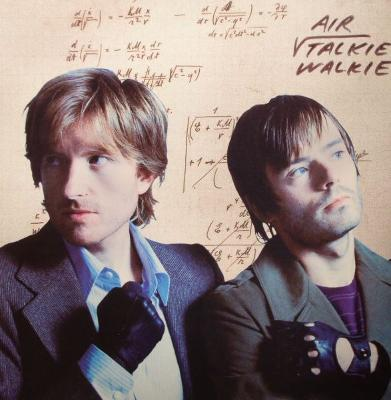

AIR - Talkie Walkie

Discogs
Description
| Label | Source, Virgin Music, Source, Virgin Music |
| Catalog number | 72435 966002 8, 72435 966002 8, 7243 5966002 8, 7243 5966002 8 |
| Format | CD, Album |
| Released | 2004 |
| Original release date | 2004 |
| Genre | Electronic |
| Style | Downtempo, Synth-pop |
Tracklist
| Position | Title |
|---|---|
| 1 | Venus |
| 2 | Cherry Blossom Girl |
| 3 | Run |
| 4 | Universal Traveler |
| 5 | Mike Mills |
| 6 | Surfing On A Rocket |
| 7 | Another Day |
| 8 | Alpha Beta Gaga |
| 9 | Biological |
| 10 | Alone In Kyoto |
Credits
| Role | Name |
|---|---|
| A&R, Management | Marc Teissier Du Cros |
| A&R, Management | Stéphane Elfassi |
| Arranged By [Strings] | Michel Colombier |
| Artwork | Richard Prince |
| Artwork [Technical Assistance] | Aaron Klein |
| Design | Roger Gorman |
| Engineer | Yann Arnaud |
| Mastered By | Bob Ludwig |
| Mixed By [Assistant] | Darrell Thorp |
| Mixed By, Recorded By [Additional Recordings] | Nigel Godrich |
| Performer | AIR |
| Photography By [Cover] | Claude Gassian |
| Photography By [Interior] | Jenna Felling |
| Photography By [Polaroids] | Marc Teissier Du Cros |
| Producer | AIR |
| Producer | Nigel Godrich |